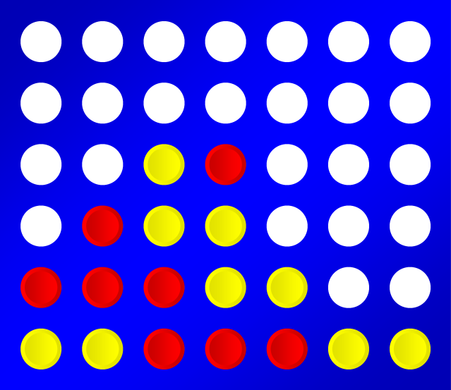
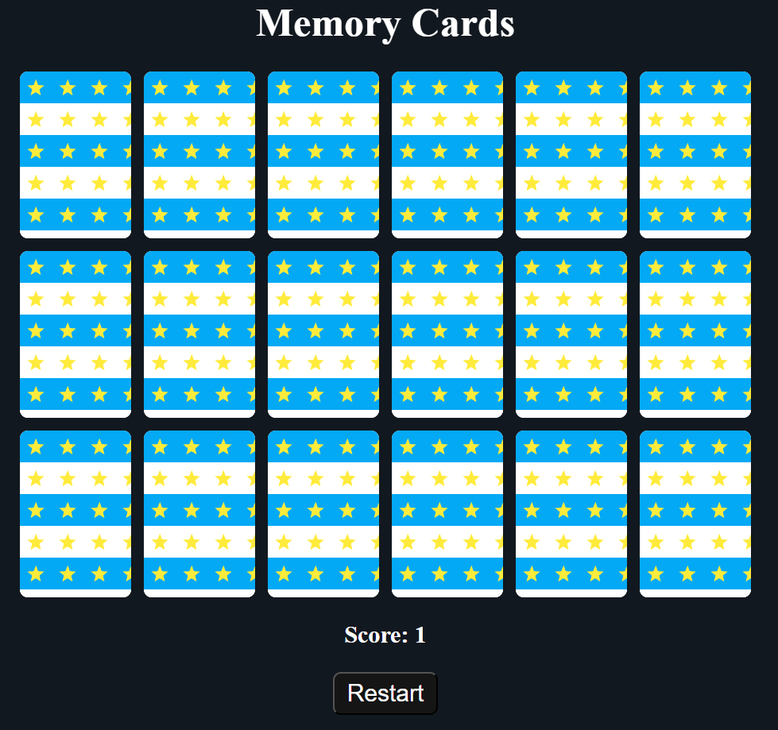
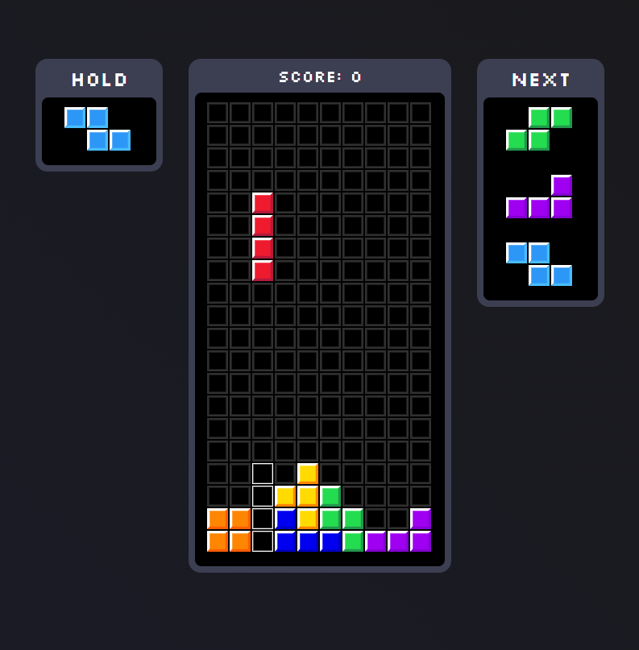

Connect 4
Turno a turno, soltá tus fichas en la cuadrícula y buscá formar una línea de cuatro de un mismo color. Puede ser horizontal, vertical o diagonal.
Jugar
Memory Card
Voltea las cartas y encuentra las parejas iguales. Cuanto menos movimientos uses, ¡mejor! Ideal para entrenar la concentración y divertirte.
Jugar
Tetris
Las figuras caen sin parar y tu misión es acomodarlas para formar líneas completas. Pensá rápido, rotá las piezas y evitá que se llene la pantalla.
Jugar
Ping Pong
Ritmo, reflejos y precisión. Dos paletas, una pelota veloz y una mesa dividida por una red. Devolvé la pelota sin fallar y superá a tu rival con estrategia y velocidad.
Jugar
Cipriano corre
Ayudá a Cipriano, un joven mago, a correr la mayor distancia posible mientras esquiva dragones y gólems. Saltá con la barra espaciadora para evitar los obstáculos. Cuanto más avanzás, más rápido se vuelve el juego. Si chocás, presioná Espacio para volver a intentarlo. ¡Intentá superar tu mejor puntaje!
Jugar
Cipriano vuela
Ayudá a Cipriano a volar la mayor distancia dentro de la caverna. Volá con la barra espaciadora para evitar los obstáculos. Si chocás, presioná Espacio para volver a intentarlo. ¡Intentá superar tu mejor puntaje!
Jugar
Cipriano y el laberinto
Ayudá a Cipriano superar cada laberinto. Evitá los enemigos y juntá todos los diamantes. Las pócimas te sirven para debilitar a tus enemigos. ¡Intentá superar todos los niveles!
Jugar